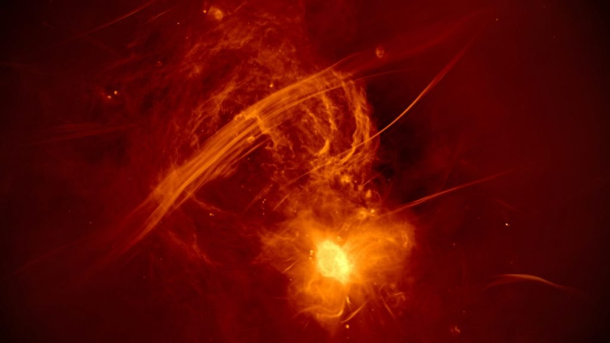
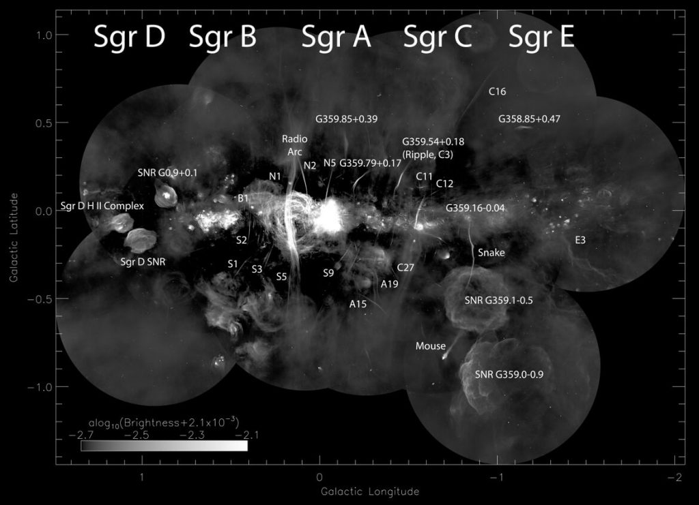
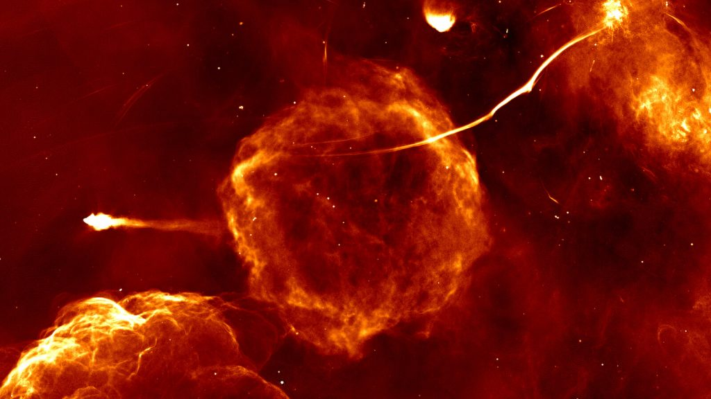
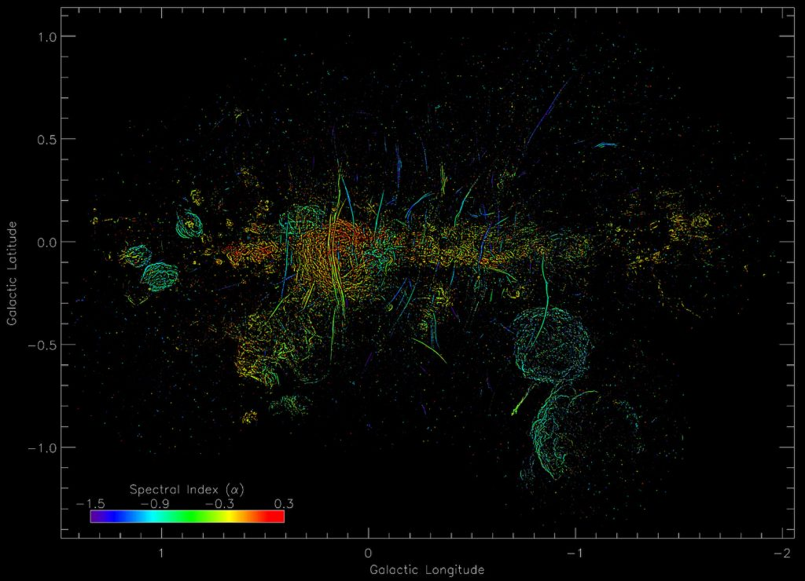
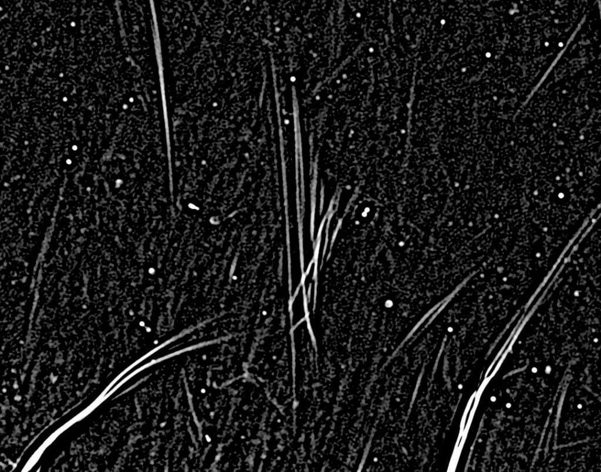

သိပ္ပံ ပညာရှင် တွေအကြားမှာ ပဟေဠိ ဖြစ်နေတဲ့ ဒီ ကြိုးမျှင်တွေ အနက်က အချို့ ကြိုးမျှင်တွေဟာ ဆိုရင် အရှည် အားဖြင့် အလင်းနှစ် ၁၅၀ လောက်တောင် ရှည်လျားတယ်လို့ ဆိုပါတယ်။ မကြာခန ဆိုသလိုပဲ ဒီကြိုးမျှင် တွေဟာ အချင်းချင်း ပူးပြီး အသွင်သဏ္ဍာန် ပုံစံ အမျိုးမျိုးကို ဖန်တီး ကြပါတယ်။
“အချို့ ပုံသဏ္ဍာန် တွေက အတော်လေး လှတယ်ဗျ။ အချို့က စောင်းကြိုးတွေလို စီစီ ရီရီ ဘေးချဉ်းကပ်ပြီး စီတန်း နေကြတာ” လို့ ဒီ ကြိုးမျှင်တွေကို သုတေသနပြု လေ့လာနေတဲ့ ဖဟဒ် ယူဆက်ဖ် ဇာဒဲ (Farhad Yusef-Zadeh) က ပြောပါတယ်။
သူဟာ အနောက်မြောက် တက္ကသိုလ် (Northwestern University) က နက္ခတ် ပညာရှင် တစ်ဦး ဖြစ်ပါတယ်။ သူနဲ့ အဖွဲ့ရဲ့ တွေ့ရှိချက် တွေကို The Astrophysical Journal Letters မှာ တင်ပြ ခဲ့တာ ဖြစ်ပါတယ်။
ဒါပေမယ့် သုတေသီ တွေဟာ ဒီ ကြိုးမျှင်တွေ ဘယ်လို ဖြစ်လာလဲ ဆိုတဲ့ မေးခွန်းကိုတော့ အဖြေ ရှာနိုင်ခြင်း မရှိကြ သေးပါဘူး။
“ကြီးမားတဲ့ မေးခွန်း တစ်ခု ကတော့ ဒီ ကြိုးမျှင် တွေရဲ့ မူလ အစ က ဘာလဲ ဆိုတာပဲ ဖြစ်ပါတယ်” လို့ သူက ရှင်းပြပါတယ်။ “ပဟေဠိက မရှင်းနိုင်သေးဘူး” လို့ သူက မှတ်ချက် ပေးပါတယ်။
ဒီ ကြိုးမျှင်တွေရဲ့ မူလနဲ့ ပါတ်သက်တဲ့ အဆိုပြုချက် တစ်ခု ကတော့ သူတို့ဟာ မစ်ကီးဝေး ဂလက်ဆီ ကြီးရဲ့ ဗဟိုက မဟာ တွင်းနက်ကြီး နဲ့ ဆက်စပ် နေမယ်လို့ ဆိုပါတယ်။
ဆက်စပ် ဆောင်းပါး – Black Hole တွင်းနက်ကြီး ဆိုတာဘာလဲ

ရှာဖွေ တွေ့ရှိခြင်း
ဒီ အာကာသ ကြိုးမျှင် တွေကို ၁၉၈၀ ပြည့်လွန် နှစ်တွေမှာ စတင် ဖော်ထုတ် တွေ့ရှိ ခဲ့ကြတာ ဖြစ်ပါတယ်။ ဒီ ကြိုးမျှင် တွေကို အမေရိကန် ပြည်ထောင်စု၊ နယူးမက္ကဆီကို ပြည်နယ် (New Mexico) မှာ ရှိတဲ့ Jansky Very Large Array ရေဒီယို တယ်လီ စကုပ် ကြီးကနေ ရှာဖွေ တွေ့ရှိ ခဲ့တာ ဖြစ်ပါတယ်။ ဒီ ရေဒီယို တယ်လီ စကုပ်ကြီးဟာ အမျိုးသား ရေဒီယို နက္ခတ် လေ့လာရေး ဌာန (National Radio Astronomy Observatory) က ပိုင်ဆိုင်တဲ့ ရေဒီယို တယ်လီ စကုပ်ကြီး ဖြစ်ပါတယ်။အဲ့သည် ရှာဖွေ တွေ့ရှိ စဉ်ကတော့ မစ်ကီးဝေး ထဲက ကြိုးမျှင် စုစုပေါင်းရဲ့ ၈၀ ရာခိုင်နှုန်း လောက်ပဲ ရှာတွေ့ခဲ့တာ ဖြစ်ပါတယ်။
ဒါပေမယ့် မကြာ သေးမီက တောင် အာဖရိက နိုင်ငံ မှာရှိတဲ့ တောင် အာဖရိက ရေဒီယို နက္ခတ် လေ့လာရေး ဌာနက MeerKAT ရေဒီယို တယ်လီ စကုပ် ကြီးကနေ တိုင်းထွာ ချက်များအရ ယခင် ရှာဖွေ တွေ့ရှိ ခဲ့တဲ့ ကြိုးမျှင်တွေထက် နောက်ထပ် ၁၀ ရာခိုင်နှုန်းကို ထပ်မံ ရှာဖွေ တွေ့ရှိ ခဲ့ကြပါတယ်။
ဒီ MeerKAT တယ်လီ စကုပ်ကြီးဟာ ကျွန်တော်တို့ ဂလက်ဆီ ရဲ့ ဗဟိုချက်ကို တစ်ရက် ၁၂ နာရီ ကနေ ၁၃ နာရီ လောက်အထိ လေ့လာ နိုင်ပါတယ်။ ဒီ တယ်လီ စကုပ်ကြီးဟာ အာကာသ ကြိုးမျှင်တွေကို စုစုပေါင်း နာရီ ၂၀၀ ခန့် လေ့လာ ခဲ့ပါတယ်။
ဒီ သုတေသန စာတမ်းမှာ တင်ပြထားတဲ့ ကြိုးမျှင်တွေရဲ့ ပြန့်နှံ့ပုံ အပြည့်အစုံ နီးပါးကို ရရှိနိုင်ဖို့ ကောင်းကင် အနှံ့အပြားကို ရေဒီယို တယ်လီ စကုပ်နဲ့ သုတေသန ပြုထားတဲ့ သုတေသနပေါင်း ၂၀ က ရရှိတဲ့ ရလဒ် တွေကို ပြန်လည် စုစည်း ထားတာ ဖြစ်ပါတယ်။
ဒီ ကြိုးမျှင်တန်းတွေ အများအပြား စုစည်းနေတဲ့ ဂလက်ဆီ ဗဟိုချက်ဟာ ကမ္ဘာက နေဆို အလင်းနှစ် ၂၅,၀၀၀ ခန့် ဝေးကွား ပါတယ်။ ဒီ ဗဟိုမှာ အလွန် ကြီးမားတဲ့ မဟာ တွင်းနက်ကြီး (Supermassive black hole) တစ်ခု ရှိပါတယ်။
ဆက်စပ် ဆောင်းပါး – မစ်ကီးဝေးရဲ့ ဗဟိုက Black hole ကြီးရဲ့ ပထမဆုံး ပုံရိပ်

ဘာကြိုးမျှင် တွေလဲ
၁၉၈၀ ပြည့်နှစ်တွေ အတွင်း ဒီ ကြိုးမျှင်တွေ စတင် ဖော်ထုတ် တွေ့ရှိ ခဲ့ချိန်က ပြုလုပ်ခဲ့တဲ့ သုတေသန တွေအရ ဒီ ကြိုးမျှင်တွေဟာ အာကာသ ရောင်ခြည်တမ်း တွေထဲ ပါဝင်တဲ့ အီလက်ထရွန် (cosmic ray electrons) တွေနဲ့ ဖွဲ့စည်း ထားတာ ဖြစ်တယ်လို့ ဆိုပါတယ်။ ဒီ အီလက် ထရွန် အမှုန် တွေဟာ လျှပ်စစ် သံလိုက် စက်ကွင်း တွေတလျှောက် အလင်းလျှင်နှုန်း နီးပါး မြန်တဲ့ အလျှင်နဲ့ ရွှေ့လျား သွားနေကြတာ ဖြစ်ပါတယ်။ဒါပေမယ့် သုတေသီ တွေဟာ ဒီ ကောစမစ် ရောင်ခြည် အီလက် ထရွန်တွေ ဘယ်က ထွက်လာလဲ၊ ဘာ့ကြောင့် ထွက်လာ ကြလဲ ဆိုတာကို အဖြေ ရှာနိုင်ခြင်း မရှိပါဘူး။
အထူးသဖြင့် အီလက်ထရွန် တွေကို အလင်းလျင်နှုန်း နီးပါး အလျင်ရအောင် ဘယ်လို လုပ်ယူ သလဲ ဆိုတာကို မဖြေရှင်း နိုင်ဘူး ဖြစ်နေပါတယ်။
ဒီ ကြိုးမျှင်တွေ ထဲက အရှည် ဆုံး ကြိုးမျှင်ဟာ အလင်းနှစ် ၁၆၃ တောင် ရှည်ပါတယ်။ အတိုဆုံး ဆိုတဲ့ ကြိုးမျှင်ကတောင် အလင်းနှစ် အနည်းငယ် အရှည် ရှိပါတယ်။
ဒီ ကြိုးမျှင် တွေနဲ့ ပါတ်သက်လို့ သုတေသီတွေ နားလည်တာ တခုကတော့ ဒီ ကြိုးမျှင် တွေ ဆီက ထွက်လာတဲ့ ရေဒီယို လှိုင်းတွေရဲ့ ပြောင်းလဲမှု တွေဟာ ဆူပါနိုဗာ ကြယ်ပေါက်ကွဲ မှုမှာ ထွက်လာတဲ့ ရေဒီယို လှိုင်းတွေ ပြောင်းလဲပုံနဲ့ မတူညီပဲ ကွာခြားတယ် ဆိုတာပဲ ဖြစ်ပါတယ်။
နောက်ပြီး ဒီ ကြိုးမျှင်တွေဟာ အာကာသ ဟင်းလင်းပြင်ထဲ အမှုန်တွေ လျင်မြန်တဲ့ အလျင်နဲ့ ရွှေ့လျား သွားရင်း စွမ်းအင် ကုန်ခမ်း သွားပြီး ဖြစ်လာပုံ ရတယ်လို့လဲ ယူဆ ကြပါတယ်။
ဒီ ကြိုးမျှင်တွေဟာ တဖြည်းဖြည်း ပိုပြီး ရှည်လာ နေသလား၊ ဒါမှမဟုတ် တိုသွား သလား ဆိုတာကိုတော့ ခုချိန်ထိ မဆုံးဖြတ်နိုင် သေးပါဘူး။ တနည်းအားဖြင့် အချိန် ကြာလာရင် ဒီ ကြိုးမျှင်တွေ ဘာဖြစ် သွားမလဲဆိုတာ ဘယ်သူမှ မသိကြ ပါဘူး။

ဖြစ်နိုင်ခြေများ
ဒီ ကြိုးမျှင် တွေရဲ့ မူရင်းနဲ့ ပါတ်သက်လို့ ဖြစ်နိုင်ခြေ အချို့ကို ဒီ စာတမ်းမှာ သုတေသီ တွေက တင်ပြ ထားကြပါတယ်။သူတို့ ရဲ့ ရေဒီယို လှိုင်း ပြောင်းလဲ တဲ့ ပုံစံက ဆူပါနိုဗာနဲ့ မတူတာမို့ ဆူပါနိုဗာ ကြယ်ပေါက်ကွဲမှုကြောင့် ဖြစ်လာတာတော့ မဖြစ် နိုင်ပါဘူး။ ဖြစ်နိုင်တာ တခုကတော့ မစ်ကီးဝေး ရဲ့ ဗဟိုက တွင်းနက်ကြီးရဲ့ အတိတ်က လှုပ်ရှားမှု တစ်ခုခု နဲ့ သက်ဆိုင်ကောင်း သက်ဆိုင်မယ်လို့ ယူဆ ကြပါတယ်။
တွင်းနက်ကနေ အတိတ် တချိန်က မှုတ်ထုတ် လိုက်တဲ့ စွမ်းအင်မြင့် အမှုန် အမွား တွေ ကနေ ကျန်ရစ်ခဲ့တဲ အမှုန် တွေကနေ ဒီ ကြိုးမျှင်တွေ ဖြစ်လာတာလဲ ဖြစ်ကောင်း ဖြစ်နိုင်ပါတယ်။ ဒါမှ မဟုတ် ဒီ မှုတ်ထုတ်လိုက်တဲ့ အမှုန်တွေက လမ်းကြောင်း တလျှောက်က အခြား ဒြပ်ပစ္စည်း တွေနဲ့ တိုက်မိပြီး ကြိုးမျှင်တွေ ဖြစ်လာတာလဲ ဖြစ်နိုင်ပါတယ်။
နောက်တစ်ခု ဖြစ်နိုင်ခြေ ရှိတာက မစ်ကီးဝေး ဂလက်ဆီ ဗဟိုက ကြမ်းတမ်းတဲ့ အခြေအနေ တွေကြောင့်လဲ ဒီ ကြိုးမျှင် တွေ တနည်းနည်းနဲ့ ဖြစ်ပေါ် လာတာ ဖြစ်နိုင်ပါတယ်။
“ဒီ အမှုန် တွေကို ဒီလောက် မြန်တဲ့ အလျင် ရအောင် လုပ်ဖို့ ဆိုတာ အလွန် အင်မတန် အားကောင်းတဲ့ စွမ်းအင် ထုတ်ပေးတဲ့ အရာဝတ္ထု တစ်ခုခု လိုအပ်ပါတယ်” လို့ ဒီ သုတေသန စာတမ်းကို ဦးဆောင် ရေးသား ခဲ့သူ ယူဆက်ဖ် ဇာဒေးက ရှင်းပြပါတယ်။

အကယ်လို့သာ ဒီလို အင်အား ကြီးမားတဲ့ စွမ်းအင် ရင်းမြစ် တစ်ခုခု မရှိနေဘူး ဆိုရင် ဒီ အမှုန်တွေဟာ တဖြည်းဖြည်း စွမ်းအင် ဆုံးရှုံး ကုန်ကြမှာ ဖြစ်ပါတယ်။
အနာဂါတ်မှာ ဆက်လက် ပြုလုပ်မယ့် သုတေသန တွေမှာ ဒီ ကြိုးမျှင်တွေ ရွေ့လျားမှု ရှိမရှိ ဆိုတာနဲ့ ဒီ ကြိုးမျှင်တွေ ရွှေ့လျား သွားလာတဲ့ အလျင်တို့ကို ရှာဖွေ ပေးနိုင်မယ်လို့ ယူဆ ရပါတယ်။
MeerKat ရေဒီယို တယ်လီ စကုပ်ကြီးကနေ လောလော လတ်လတ် ရိုက်ကူး ပေးလိုက်တဲ့ ပုံရိပ်တွေ အရ အချို့သော ကြိုးမျှင် တွေဟာ အချင်းချင်း စုပေါင်းပြီး အသွင်သဏ္ဍာန် အမျိုးမျိုးကို ဖန်တီး ပေးကြတာကို တွေ့ကြ ရပါတယ်။ ဒီလို ပုံသဏ္ဍာန်တွေ စုပေါင်း ဖန်တီးတဲ့ ကြိုးမျှင်တွေဟာ ပင်ရင်း တစ်ခု ထဲကနေ ထွက်လာကြတဲ့ ပုံလဲ ရှိပါတယ်။
အချို့ ကြိုးမျှင် တွေကတော့ သူ့နာက အခြား ကြိုးမျှင် တွေကနေ ကွဲပြီး သီးခြား ခွဲထွက် နေတဲ့ ပုံမျိုးလဲ တွေ့ကြ ရပါတယ်။
နက္ခတ် ပညာရှင်တွေ နောက်ထပ် မသင်္ကာတဲ့ ပင်ရင်း တစ်ခုကတော့ မစ်ကီးဝေးရဲ့ ဗဟို ဝန်းကျင်မှာ ၂၀၁၉ ခုနှစ်က ရှာဖွေ တွေ့ရှိ ထားခဲ့တဲ့ ဧရာမ ပူပေါင်းကြီးပဲ ဖြစ်ပါတယ်။ ဒီ ပူပေါင်းကြီးကနေ ရေဒီယို လှိုင်းတွေ ထုတ်လွှင့် နေတာကို ဖမ်းယူ မိရာက သူ့ကို ရှာဖွေ တွေ့ရှိ ခဲ့ကြတာ ဖြစ်ပါတယ်။

ဒီ အချက်က အချို့သော နက္ခတ် ပညာရှင် တွေကို အတော်လေး ခေါင်းစား စေပါတယ်။ အချို့ကလဲ ဒီ ကြိုးမျှင် တွေဟာ အဆင့်မြင့် နည်းပညာသုံး ကိရိယာ တွေကနေ ထွက်ပေါ်လာတဲ့ အရာတွေလားလို့ မေးခွန်း ထုတ်ကြပါတယ်။ ဥပမာ လေထဲ ဂျက်လေယာဉ်တွေ ပျံသွားရင် နောက်မှာ အမျှင်တန်းပြီး ကျန်ခဲ့ သလိုမျိုးပေါ့။
ဒါပေမယ့် ဒီလို စိတ်ကူးယာဉ် ဆန်တဲ့ အတွေးမျိုးကို နက္ခတ် ပညာရှင် တွေ အကြားမှာတော့ သိပ်ပြီး အလေးအနက် မထား ကြပါဘူး။
“ဒီ ကြိုးမျှင် တွေစုပြီး ဖြစ်လာတဲ့ ပုံသဏ္ဍာန်တွေက စိတ်ဝင် စားစရာတော့ အကောင်းသားပဲ” လို့ ဒီစာတမ်းကို ဦးဆောင် ရေးခဲ့သူ ယူဆက်ဖ် ဇာဒေး က ဝန်ခံပါတယ်။ “ဒါပေမယ့် ဒီလို (အဆင့်မြင့် နည်းပညာသုံး ကိရိယာ တွေကနေ ထွက်ပေါ်လာတာ ဆိုတဲ့) အပြောတွေ ကတော့ သိပ္ပံ ဝတ္ထု ဆန်ဆန် စိတ်ကူးယာဉ်မှု သက်သက်ပါ” လို့ သူက မှတ်ချက် ပေးပါတယ်။
မူရင်း သုတေသန စာတမ်းကို ဒီမှာ ဖတ်ရှု နိုင်ပါတယ် – Statistical Properties of the Population of the Galactic Center Filaments: the Spectral Index and Equipartition Magnetic Field.
Ref: Thousands of Mysterious Strands Cross Through the Center of Our Galaxy | Discover Magazine